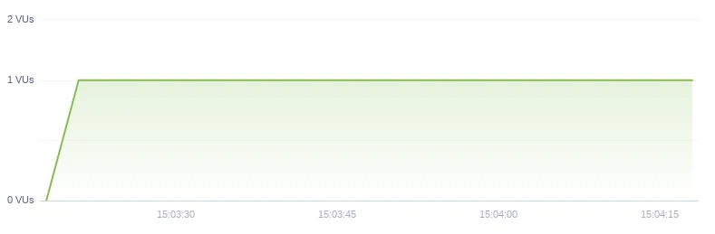

k6 - 現代負載測試工具
Posted

最近工作上用了這套工具幫產品做 Load testing，使用起來相當舒服，測試結果與實際狀況也很接近，上來分享一下
k6
k6 是一個 Open source load testing tool 和 Saas，用 Go 撰寫，有點可惜的是使用 JavaScript 來寫腳本，但有提供許多 Examples，對於 JavaScript 不熟的人撰寫起來也不困難。
使用起來很簡單，介面也相當乾淨，也有提供 testing API 讓你玩看看它。
安裝
方法很多種，這邊是直接用 homebrew
$ brew install k6
執行
先簡單寫了一個 test.js，情境為每一秒戳一次 http://test.k6.io
import http from 'k6/http';
import { sleep } from 'k6';
export default function () {
http.get('http://test.k6.io');
sleep(1);
}
$ k6 run test.js
/\ |‾‾| /‾‾/ /‾‾/
/\ / \ | |/ / / /
/ \/ \ | ( / ‾‾\
/ \ | |\ \ | (‾) |
/ __________ \ |__| \__\ \_____/ .io
execution: local
script: test.js
output: -
scenarios: (100.00%) 1 scenario, 1 max VUs, 10m30s max duration (incl. graceful stop):
* default: 1 iterations for each of 1 VUs (maxDuration: 10m0s, gracefulStop: 30s)
running (00m01.9s), 0/1 VUs, 1 complete and 0 interrupted iterations
default ✓ [======================================] 1 VUs 00m01.9s/10m0s 1/1 iters, 1 per VU
data_received..............: 11 kB 5.8 kB/s
data_sent..................: 76 B 40 B/s
http_req_blocked...........: avg=557.07ms min=557.07ms med=557.07ms max=557.07ms p(90)=557.07ms p(95)=557.07ms
http_req_connecting........: avg=303.93ms min=303.93ms med=303.93ms max=303.93ms p(90)=303.93ms p(95)=303.93ms
http_req_duration..........: avg=307.96ms min=307.96ms med=307.96ms max=307.96ms p(90)=307.96ms p(95)=307.96ms
http_req_receiving.........: avg=518µs min=518µs med=518µs max=518µs p(90)=518µs p(95)=518µs
http_req_sending...........: avg=1.98ms min=1.98ms med=1.98ms max=1.98ms p(90)=1.98ms p(95)=1.98ms
http_req_tls_handshaking...: avg=0s min=0s med=0s max=0s p(90)=0s p(95)=0s
http_req_waiting...........: avg=305.46ms min=305.46ms med=305.46ms max=305.46ms p(90)=305.46ms p(95)=305.46ms
http_reqs..................: 1 0.526921/s
iteration_duration.........: avg=1.86s min=1.86s med=1.86s max=1.86s p(90)=1.86s p(95)=1.86s
iterations.................: 1 0.526921/s
vus........................: 1 min=1 max=1
vus_max....................: 1 min=1 max=1
執行後會直接在 stdout 顯示測試的結果，VU (virtual user) 為 1 ，代表這次測試只有模擬一個 user 在執行這個動作。
如果要模擬更多 VU 或持續時間只需要：
$ k6 run --vus 10 --duration 30s test.js
也可以定義在 script 裡面
import http from 'k6/http';
import { sleep } from 'k6';
export let options = {
vus: 10,
duration: '30s',
};
export default function () {
http.get('http://test.k6.io');
sleep(1);
}
Ramping up and down VUs
k6 提供 stages，可以模擬 user 持續增加或遞減
import http from 'k6/http';
import { check, sleep } from 'k6';
export let options = {
stages: [
{ duration: '30s', target: 20 },
{ duration: '1m30s', target: 10 },
{ duration: '20s', target: 0 },
],
};
export default function () {
let res = http.get('https://httpbin.org/');
check(res, { 'status was 200': (r) => r.status == 200 });
sleep(1);
}
以上面這個例子來說，情境就會是：
- user 在 30 秒內增加到 20 人
- 1 分 30 秒內降至 10 人
- 最後 20 秒逐漸退去到 0 人
check function 為確認回的 code 是 200，如果有非 200 的會在結束後統一顯示結果。
Test Types
並非每種測試都叫做壓力測試，官網上有寫出這些測試的差別和使用情境，這邊簡單介紹一下：
Smoke Testing
盡可能用最少的資源去測試，只是為了測試出有沒有 error

Load Testing
Load testing 也稱 Performance testing ，主要是關注當前系統的配置，在多少 user 或 RPS 時，performance 是如何
Stress Testing
和 Load testing 不同，主要是測試系統的極限在哪裡
勿在 production 測試
Spike Testing
是 Stress testing 的變體，與之不同的是，流量不會慢慢進來，測試在短時間內大量的流量進來，系統還能不能撐住
勿在 production 測試

Soak Testing
主要測試在長時間下，系統的可靠性和效能
這次產品測試
這次產品有預估人數，所以設定了一個人數(假設為 5000 人)，來做 Load testing
人數的情境：
- 5 min 到 5000 人
- 5 min 持平
- 2 min 5000 人退去到 0
打 API 的情境：
- login 拿到 token (只做一次)
- 之後每 10 秒戳一次某 API
寫成 script 大概會是這樣：
import http from 'k6/http';
import {check, group, sleep} from 'k6';
export let options = {
stages: [
{ duration: '5m', target: 5000 },
{ duration: '5m', target: 5000 },
{ duration: '2m', target: 0 },
],
};
let isLogin = false
export default function () {
group('login', () => {
if (!isLogin) {
let loginRes = http.post(`https://api.example.com/v1/login/`, {
username: `user_${__VU}`,
password: 'pwd',
});
isLogin = true
check(loginRes, { 'logged in successfully': (resp) => resp.json('token') !== '' });
}
})
group('get something', () => {
let res = http.get(`https://api.example.com/v1/something`, {
headers: {
Authorization: `Bearer ${loginRes.json('token')}`,
},
}).json();
check(res, { 'status was 204': (r) => r.status === 204 });
})
sleep(10);
}
不同的 VU 不會共用 variable
測試結果：
實際情況：
以 CPU 使用率為例，可以看到在持平的時候測試結果維持在 18% 左右，而產品實際快到達該人數的時候是 17% 左右，很接近測試的數據。
後記
以往做 load testing 的時候都是用 vegeta 來測試，但測試的效果有限，沒辦法真正測出 End-User 實際使用的情境，所以只能大概多估算一下目前配置能乘載多少人。
k6 提供了許多豐富的功能，可以根據不同情境做不同測試，也支援了許多 Protocol，像是 WebSocket gRPC 等，也可以把 result output 到 JSON、CSV、AWS Cloud Watch 等。
k6 Cloud 提供了很豐富的資料分析和精美的介面，也能幫你做定時的測試，但是免費仔要用的話 VU 只能到 50 人，要上去就要再付錢了。
經過這次認識到測試類型有很多種，而不是每個都叫做壓力測試，讓自己又增長了不少知識，有興趣的可以去官網 docs 看看，收穫會更多。